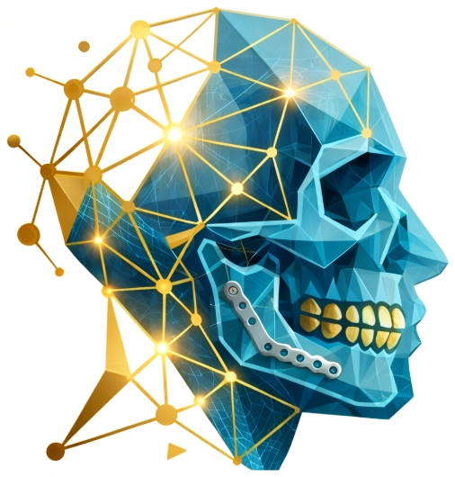

01
Scan → Anatomy
Work with DICOM imaging and surface models to establish a patient-specific anatomical foundation.
DICOM / STL / MESH
A digital planning environment built around the anatomy, geometry and precision of maxillofacial surgery.

MaxMorph brings imaging, surface data and surgical intent into one digital planning pipeline.
Work with DICOM imaging and surface models to establish a patient-specific anatomical foundation.
Visualise osteotomies, repositioning and surgical relationships in three dimensions.
Turn a validated virtual plan into clinically useful splints, guides and patient-specific workflows.
Designed around the way maxillofacial surgeons think: anatomy first, intervention second, verification throughout.
CBCT / CT
Intraoral scan
Anatomy
Surface data
Osteotomy
Movement
Splints
Guides / PSI
Digital plan
→ surgical field
From fracture reduction to patient-specific reconstruction, MaxMorph supports the procedures where precise three-dimensional planning matters most.
Virtual reduction, occlusal relationships and transfer planning.
01 ↗Three-dimensional planning for complex skeletal movements.
02 ↗Plan around anatomy, prosthetic intent and available bone.
03 ↗Digital planning for benign pathology, defects and custom solutions.
04 ↗A plan is only as good as its transfer to surgery. MaxMorph is built so every case can be checked against what actually happened.
Compare the virtual plan with post-operative imaging to quantify translation and rotation of each segment.
Verify that surgical guides and splints seat as designed, and record any adjustment needed at the table.
Track time from scan received to plan approved and guides delivered, case by case.
Assess post-operative occlusal relationships against the planned target.
Case results and validation data will be published here as they are finalised. For study collaborations, get in touch.
For VSP enquiries, clinical collaborations or product discussions.
admin@max-morph.com ↗